地政学
ザグレブは中欧、アドリア海、南東欧を結ぶ内陸首都です。EUとシェンゲンの制度、旧ユーゴ圏との記憶、バルカンの交通路が重なり、国家運営と地域外交の実務が集まる街です。港町ではない点も役割を際立てますよ。
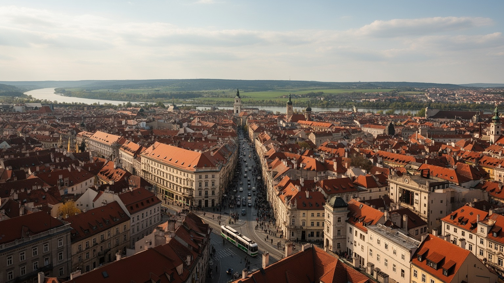
🇭🇷 クロアチア / 中欧・南東欧 / World City Atlas
中欧、アドリア海、南東欧を結び、丘の旧市街、首都行政、大学、IT、カトリックの儀礼、移民労働、観光、地震復興が重なるクロアチアの首都です。
都市の骨格
ザグレブはクロアチアの政治と教育の中心であり、アドリア海沿岸の観光国家を内陸から支える管理、金融、文化、物流の結節点でもあります。
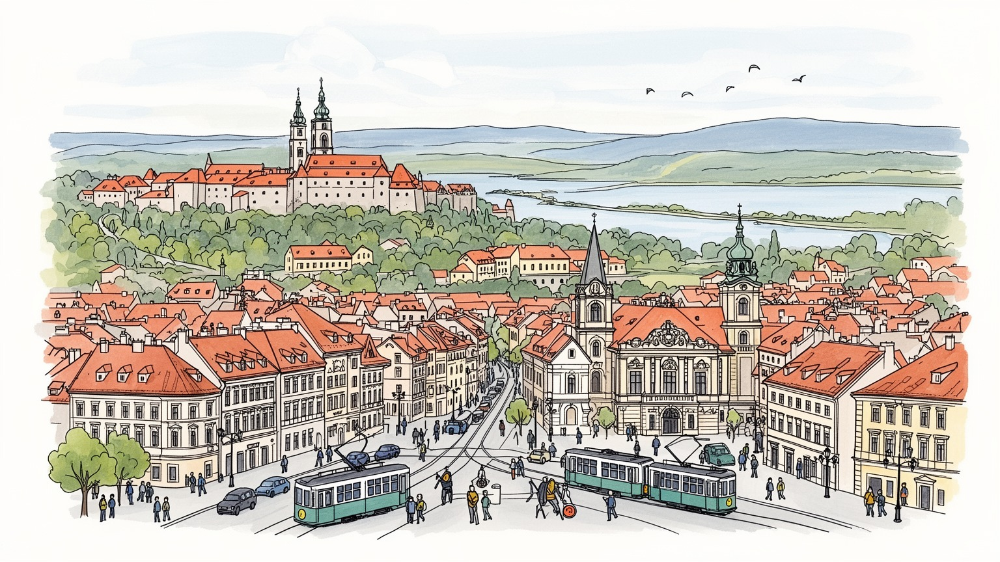
ザグレブは中欧、アドリア海、南東欧を結ぶ内陸首都です。EUとシェンゲンの制度、旧ユーゴ圏との記憶、バルカンの交通路が重なり、国家運営と地域外交の実務が集まる街です。港町ではない点も役割を際立てますよ。
行政、金融、通信、医薬、IT、大学、商業、観光サービスが雇用を支えます。若い専門職と公共部門、配送、清掃、飲食、建設、外国人労働が近くで働き、賃金と住宅費の差が日常の不安になりますね。差も見えますよ。
カトリックの聖堂、正教会、イスラム共同体、ユダヤ人の記憶、世俗的なカフェ文化、劇場、大学、博物館が重なります。聖マルコ教会の屋根や市場の朝は、国民文化と暮らしの距離を近づけています。記憶も揺れます。
旅人は上町、下町、ドラツ市場、博物館、トラム、山麓の緑を歩きます。住民には地震復興、家賃、郊外通勤、冬の霧、若者流出、移民統合が現実で、落ち着いた首都像の裏に生活の課題がありますよね。費用も重いです。
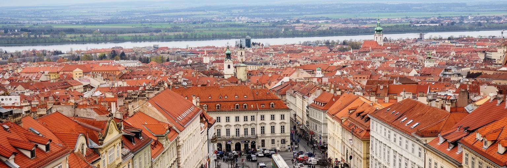
ザグレブはアドリア海に面していない首都ですが、その内陸性こそが都市の役割を決めています。北にはスロベニアとオーストリアへ向かう中欧の回廊があり、南西にはリエカやスプリトなど海の玄関口へ下る交通が伸び、東にはパンノニア平原と旧ユーゴスラビアの都市圏が続きます。サヴァ川の平地とメドヴェドニツァ山麓の間に発達した市街地は、軍事、鉄道、行政、商業の結節として長く機能してきました。クロアチアがEU、ユーロ圏、シェンゲン圏に入った現在、ザグレブは小国の首都でありながら、国境管理、投資、移民、難民支援、エネルギー安全保障を欧州制度の中で扱う場所になっています。アドリア海の観光イメージだけでクロアチアを見ると、この内陸首都が担う調整の重さを見落とします。政府機関、裁判所、大学、企業本社、各国大使館が集まることで、海岸部の稼ぎ、農村の課題、隣国との記憶がここへ持ち込まれます。鉄道や高速道路の選択は、単なる移動ではなく、どの市場へ近づき、どの地域を周縁に置くかという国家の判断にもなります。外交官、学生、季節労働者、企業の管理部門が集まるため、地域の緊張は日常の会話にも入り込みます。ザグレブを読むことは、中欧とバルカン、海と内陸、EU制度と旧ユーゴ圏の経験が一つの首都でどう折り合うかを見ることです。今も続きます。
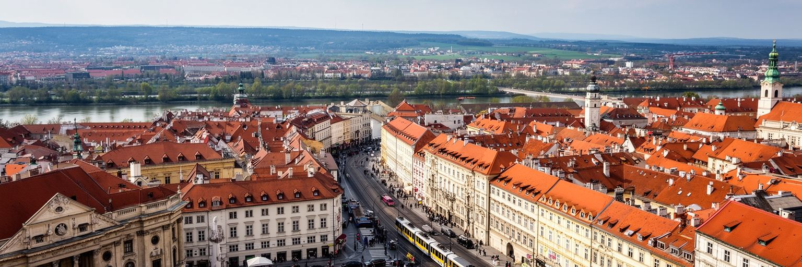
ザグレブの政治的な重みは、旧市街の象徴的な建物と下町の官庁、裁判所、大学、報道機関が近接している点にあります。聖マルコ広場周辺には政府と議会の記憶が重なり、近代国家の制度はハプスブルク期、ユーゴスラビア期、独立後の戦争、EU加盟を経て何度も意味を変えてきました。首都の仕事は式典や外交だけではありません。予算、教育、医療、復興、交通、文化財、国境管理、地方との配分、観光政策、少数者保護といった実務が、比較的小さな都市空間の中で処理されます。市民にとって行政の集中は便利さも生むが、地方から見れば権限と資金が首都へ偏る感覚にもつながります。抗議デモ、労組の集会、学生の声、退役軍人や宗教団体の主張が、広場や通りに現れることもあります。ザグレブの穏やかなカフェの風景の背後には、国家がどの記憶を公的に扱い、どの地域へ投資し、どの労働者を守るのかという政治があります。地方自治体としての市も、廃棄物、公共交通、学校、住宅、気候対策を担い、国政と市政の境界は住民生活の中でよく交差します。首都で働く公務員の判断は、海岸の観光地、内陸の村、国境の町にも届きます。メディアの報道もここへ集まり、全国の争点を街路へ運びます。首都としてのザグレブは巨大な権力都市ではありませんが、距離が近いぶん制度の緊張が見えやすい街です。
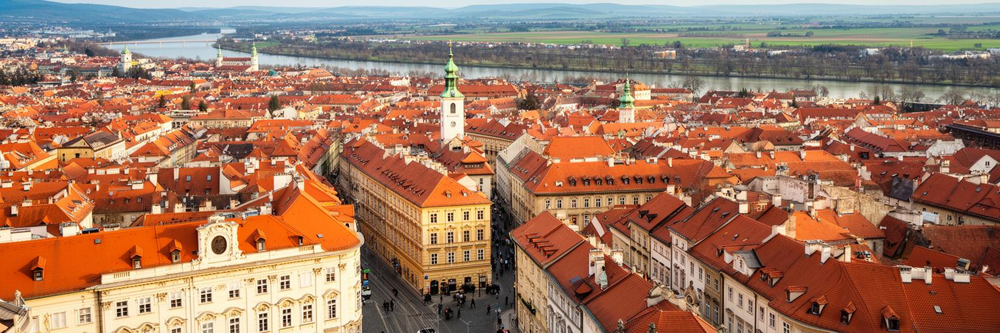
ザグレブの旧市街は、丘の上のグラデツとカプトル、そして十九世紀以降に整えられた下町によって読めます。聖マルコ教会の色鮮やかな屋根、ザグレブ大聖堂の尖塔、石の門、細い坂道、短いケーブルカーは、首都の絵葉書として有名です。しかしこの景観は、観光のために静止した舞台ではありません。教会の権威、商人と職人の自治、ハプスブルク帝国の都市計画、国民運動、戦争の記憶、地震の傷が、同じ石畳に重なります。下町へ降りると、格子状の街路、公園、劇場、博物館、駅前の動線が、近代的な市民都市としてのザグレブを示します。上町の細い通りは政治と宗教の象徴を濃く見せ、下町の広い軸線は教育、芸術、商業、日常の散歩を受け止めます。観光客は短時間で両方を歩けるが、住民にとっては通勤、買い物、学校、修繕、騒音、家賃、文化財規制の現場でもあります。屋根や外壁を保存する規則は街の魅力を守る一方、古い配管、断熱、階段、地震補強を難しくします。朝の市場や夕方のカフェは、記念碑の街を生活の場所へ引き戻します。季節の祭りや巡礼も、坂道の記憶を今の共同体へつなぎ直します。今も続きます。旧市街を美しい屋根だけで見ると、そこに住み続けるための費用や制度が消えてしまいます。ザグレブの魅力は、丘の記憶と下町の市民生活が近い距離で接している点にあります。
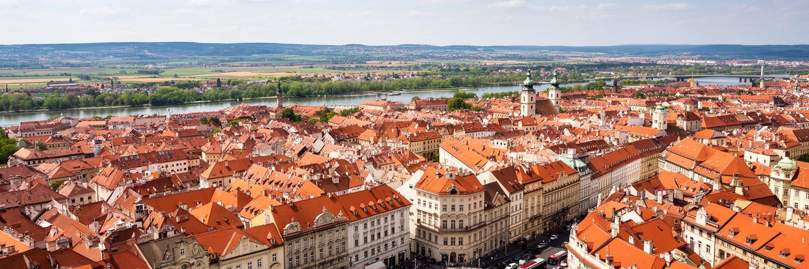
ザグレブの経済は、行政と公共サービスだけでなく、金融、通信、医薬品、食品、電力、建設、卸売、小売、情報通信、専門サービス、教育、医療、文化産業に支えられています。クロアチアの大企業やメディア、研究機関が集まり、国内市場の意思決定は首都へ集まりやすいです。近年はIT企業、スタートアップ、ゲーム、デザイン、デジタルサービスも存在感を強め、英語で働く若者や帰国人材も増えています。一方で、都市を動かすのは高所得の専門職だけではありません。飲食、ホテル、清掃、配送、警備、建設、介護、倉庫、小売の仕事が、中心部と郊外をつなぎます。失業率が低く見える時期でも、若者の賃金、非正規契約、家賃上昇、海外移住の選択は大きな問題です。観光国家クロアチアでは、海岸部の季節労働が目立ちますが、ザグレブは通年の行政、教育、医療、商業によって別の安定を作ります。その安定は地方から人を引き寄せる一方、首都への集中を強めます。さらにネパール、フィリピン、インド、バングラデシュなどからの労働者も増え、職場と言語の風景を変えています。大学と研究機関は人材供給の基盤になり、医薬、通信、エネルギー、都市サービスの改善にも関わります。ザグレブの産業を読むには、企業本社の数字と、早朝のトラムに乗るサービス労働者を同じ経済として見る必要があります。
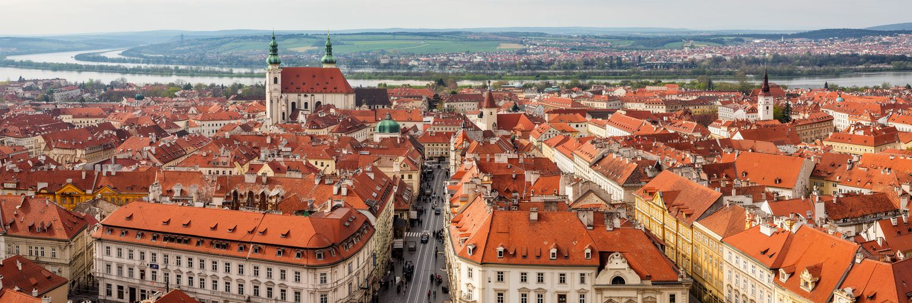
ザグレブの都市文化を理解するには、カトリックの存在を避けて通れません。大聖堂、聖マルコ教会、修道会、宗教行事、学校、慈善活動は、国民文化と日常生活に深く関わります。祝祭や葬儀、結婚、日曜の礼拝は、観光客が見る建築を生きた制度へ戻します。同時に、ザグレブは単一の信仰だけで成り立つ都市ではありません。正教会、イスラム共同体、ユダヤ人の歴史、無宗教の市民、近年の移民の信仰が、首都の社会地図を作ります。第二次世界大戦、社会主義期、独立戦争の記憶は、宗教施設や記念碑、博物館、政治言説に残り、時に激しい議論を生みます。信仰は慰めや共同体を与える一方、少数者の排除、歴史の選別、ジェンダーや教育をめぐる対立とも関わります。ザグレブの宗教を読むには、大聖堂の高さだけでなく、小さな祈りの場所、移民の礼拝、追悼式、学校での価値観の議論を見る必要があります。大学や劇場、カフェの世俗的な公共圏も、宗教の声と並びながら都市の価値観を作ります。世代によって教会との距離は違い、その差は家族、学校、選挙、文化イベントにも表れます。宗教は古いものとして残っているのではなく、EUの制度、世俗的な若者文化、新しい移民、戦争記憶の中で現在も形を変えています。都市の寛容さは、異なる記憶が同じ街路で共存できるかによって測られます。
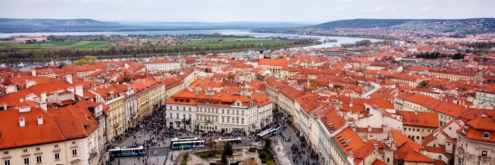
ザグレブは長く、クロアチア各地やボスニア・ヘルツェゴビナ、セルビア、コソボ、北マケドニアなど旧ユーゴ圏からの移動を受け止めてきました。近年は労働力不足を背景に、ネパール、フィリピン、インド、バングラデシュなどから来る労働者も増え、街の言語、職場、宗教、食の風景が変わりつつあります。彼らは配送、清掃、建設、飲食、ホテル、小売、介護、工場などで働き、都市の便利さを支えます。EUとシェンゲンの外縁から内部へ位置を変えたクロアチアでは、難民、庇護希望者、ウクライナからの避難者、外国人労働者の支援も首都の重要な課題です。行政窓口、学校、医療、住宅、労働条件、言語学習、差別対策は、都市の包摂力を試します。ザグレブの伝統的な国民都市イメージは強いですが、実際の街はより多声的になっています。新しい住民が見えにくい時間帯や職場で働くほど、その存在は統計や観光の語りからこぼれがちです。配達員の待機場所、共同住宅の一室、休日の礼拝、子どもの学校選びにも、移民都市としての現実が現れます。移民を単なる労働力として扱えば、孤立、低賃金、住環境の悪化、地域の不信が残ります。反対に、学校、図書館、労組、宗教団体、地域活動が接点を作れば、首都の文化は広がります。ザグレブの未来は、誰を一時的な人と見なし、誰を都市の一員として迎えるかにかかっています。
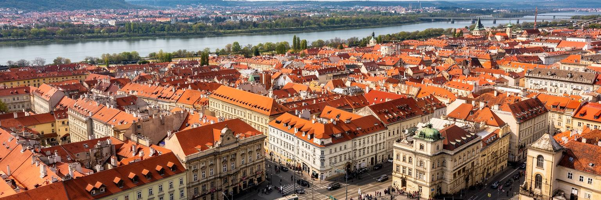
ザグレブの都市形は、丘の旧市街、下町の格子、サヴァ川、社会主義期以降の集合住宅地、郊外の戸建て、幹線道路によって作られています。青いトラムは街の象徴であり、中心部、駅、大学、住宅地、市場を結ぶ生活インフラです。旅行者には便利で親しみやすい交通に見えますが、住民にとっては通勤時間、乗り換え、老朽化、郊外のバス接続、車の混雑、歩道の安全が日々の問題です。川の南側に広がるノヴィ・ザグレブは、近代的な集合住宅、公園、商業施設、道路によって旧市街とは違う都市感覚を持ちます。中心部の石畳や歴史的建物だけを見ていると、戦後の住宅政策や郊外の生活を見落とします。ドラツ市場や駅前での待ち合わせ、住宅団地のスーパー、郊外の学校送迎は、観光の中心から少し離れた本当の日常を示します。空港、高速道路、鉄道はアドリア海沿岸、スロベニア、ハンガリー、セルビア方面と首都をつなぎますが、国際鉄道の速度や駅前空間の改善はまだ課題です。自転車道や歩行者空間も増えつつあるものの、車中心の場所では子どもや高齢者の移動が制約されます。住宅費が上がるほど遠くに住む人が増え、交通の質は生活格差と直結します。ザグレブの交通を読むには、絵になるトラムだけでなく、郊外から働きに来る人、夜勤の帰宅、学校への道、川を渡る橋の容量を同時に見る必要があります。
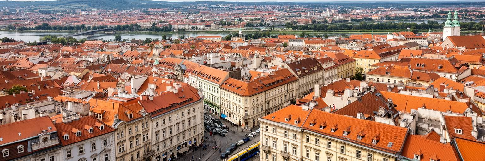
クロアチア観光というとドゥブロヴニクやスプリト、島々の海が強く想起されますが、ザグレブは内陸首都として別の旅を提供します。上町の坂道、聖堂、聖マルコ教会、ドラツ市場、博物館、美術館、劇場、カフェ、ミロゴイ墓地、クリスマスマーケット、メドヴェドニツァ山の緑が、海岸とは違う季節感を作ります。短い滞在でも歩きやすい都市ですが、文化の厚みは一日で消費できるものではありません。オーストリア、ハンガリー、スラヴ、バルカン、地中海の要素が混じり、料理、菓子、音楽、建築、言葉の響きに複数の歴史が残ります。観光はホテル、飲食、案内、清掃、文化施設、交通の雇用を生む一方、中心部の家賃、短期滞在、土産物化、住民の静けさにも影響します。大学都市としての催し、映画祭、現代美術、クラブ、文学イベントも、旅行者と住民を同じ夜の街へ招きます。冬のアドベント市場も、寒い内陸の季節を観光資源へ変えています。ザグレブの観光が海岸都市と違うのは、首都の日常に比較的近い場所で成り立つ点です。市場で買い物をする住民の横を旅行者が歩き、劇場へ向かう人と週末の観光客が同じトラムに乗ります。だからこそ、観光は都市の生活を壊さずに、文化財の修復や地域の商いを支える形で運営される必要があります。ザグレブの旅は、派手な海景ではなく、重なった記憶を静かに歩く経験になります。
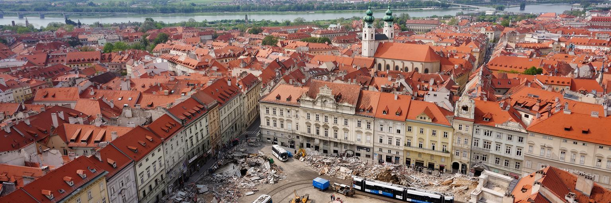
二〇二〇年の地震は、ザグレブの美しい歴史的景観がどれほど脆い基盤の上にあるかを示しました。大聖堂、学校、病院、住宅、博物館、古い集合住宅に被害が出て、修復と耐震補強は長期の課題になりました。文化財を守ることは、外観をきれいに戻すだけではありません。住民が安全に住み続けられるか、修繕費を誰が負担するか、賃貸住宅の所有者と入居者をどう支えるか、学校や医療施設をどう早く戻すかが問われます。地震は都市の社会問題を浮かび上がらせます。資金や情報にアクセスできる人は復旧を進めやすい一方、高齢者、低所得者、複雑な権利関係を抱える建物、文化財指定のある住宅は時間がかかります。観光客にとって足場は一時的な不便に見えるかもしれませんが、住民には暮らしと資産の不安です。復興はEU資金、国、市、専門家、所有者、近隣の合意を必要とし、遅れは政治への不信につながります。同時に、修復は断熱、省エネ、バリアフリー、防災、公共空間の改善を進める機会にもなります。気候変動による豪雨や夏の暑さも、古い建物をどう直すかという判断に加わります。学校や病院の復旧速度は、都市への信頼を測る尺度にもなります。ザグレブを現在形で読むには、完成した旧市街ではなく、直しながら住む街として見ることが大切です。美しい屋根の下で、都市は過去の保存と未来の安全を同時に交渉しています。
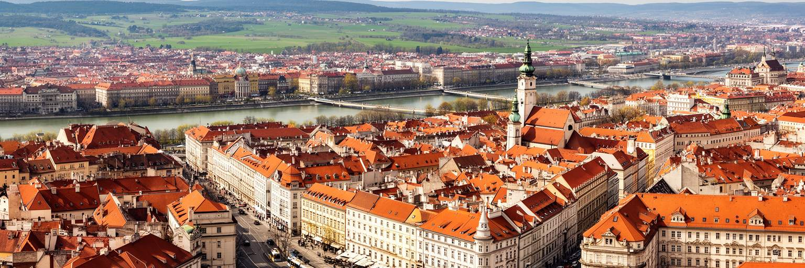
ザグレブは、世界最大級の金融都市でも巨大港湾都市でもありません。それでも都市アトラスで重要なのは、クロアチアという国家の政治、教育、文化、経済管理、戦争記憶、EU統合、移民、観光、地震復興が、歩ける距離の首都に濃く集まるからです。丘の旧市街は宗教と国家の象徴を見せ、下町は市民文化と大学を育て、サヴァ川の南側は戦後の住宅と現代の生活を広げます。アドリア海沿岸の観光収入や地方の人口減少、隣国との歴史、外国人労働者の受け入れは、すべてザグレブの制度へ返ってきます。市場の朝、トラムの混雑、聖堂の修復、官庁街の抗議、学生のカフェ、移民の職場、郊外の住宅を同じ地図に置くと、首都の落ち着いた表情の下に多くの調整があることが分かります。ザグレブを見る時に大切なのは、海岸観光の前後に立ち寄る便利な街としてだけ扱わないことです。この都市は、クロアチアが中欧、地中海、南東欧の間で自分の位置を作り直す現場です。小さな市場や古い教会も、EU資金、観光需要、地方出身者、外国人労働者、記憶政治と無関係ではありません。海へ向かう旅の出発点である前に、ここは国の制度を毎日組み立てる生活都市です。規模は控えめでも、制度と生活の距離が近いため、都市の選択が住民の毎日に現れやすいです。その近さに、ザグレブの強さと課題が同時にあります。